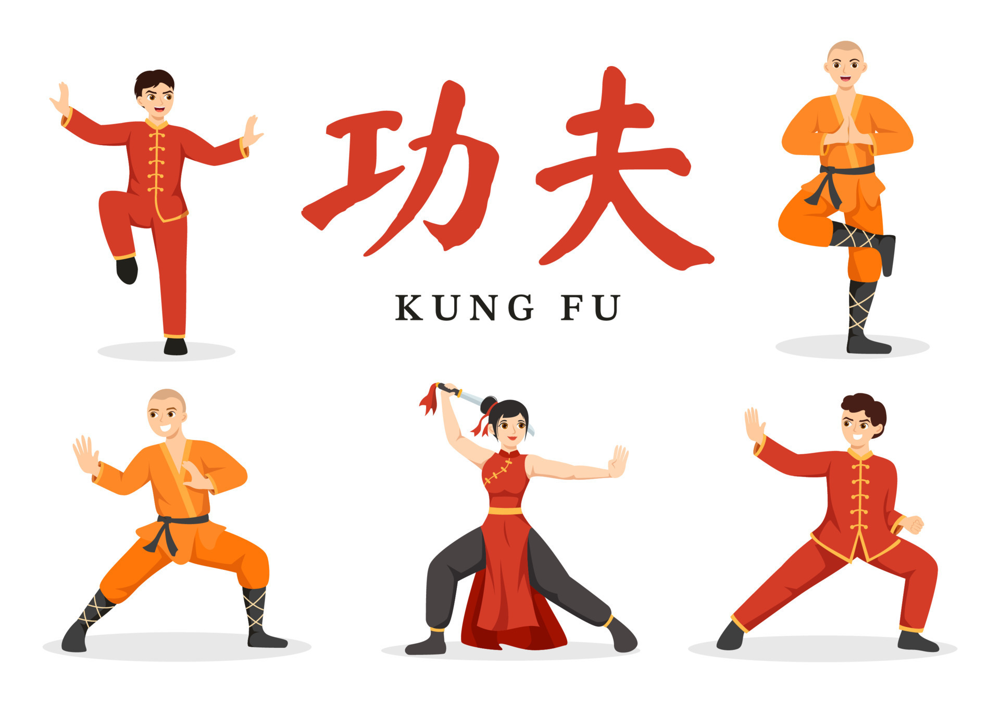
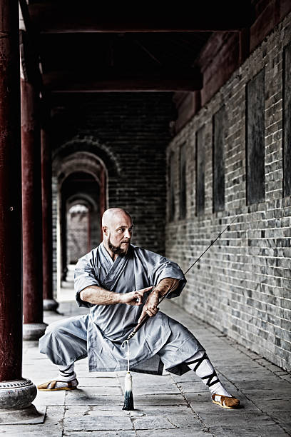
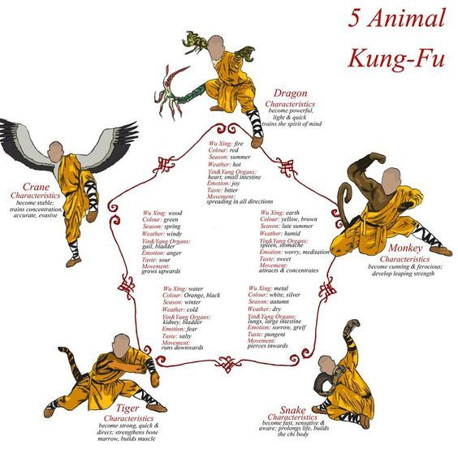
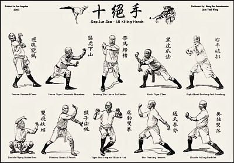
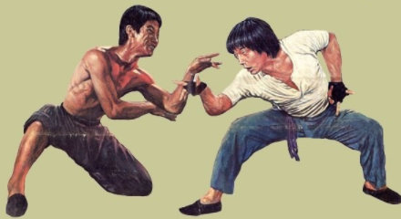

KUNG-FU

Una milenaria arte marcial china y una de las artes marciales antiguas más conocidas,
el kung-fu es una disciplina por lo general de contacto directo en el que se usa el
cuerpo a cuerpo a partir de puñetazos, patadas, agarres, desplazamientos y diferentes
movimientos acrobáticos para mantener el equilibrio interior al entrenar y también como
autodefensa. Su origen se encuentra en los monjes shaolín, quienes lo crearon con el fin
de que los monjes pudieran defenderse.
El kung-fu parte de una base filosófica budista y taoísta que pretende enseñar el valor
del esfuerzo y otros tales como humildad, confianza, voluntad, justicia, perseverancia,
valor y honestidad. El kung-fu cuenta con una gran cantidad de variantes, de las cuales
entre las más conocidas están la shaolín o las vinculadas con distintos animales
Parte de la Historia del kung fu

Las raíces del kung fu se remontan al siglo VI. Suele señalarse
como el impulsor de la disciplina al monje budista Bodhidharma,
quien solía imitar los movimientos de los animales a modo de
ejercicio. Bodhidharma habría sido quien introdujo este arte marcial
en el monasterio de Shaolin
Es importante considerar que no existe un único kung fu, sino que hay muchas modalidades.
A nivel general se trata de un arte marcial que también es una filosofía de vida ya que se
rige por principios morales y acarrea un código de conducta. Su evolución está íntimamente
ligada con la historia de su cultura, y por eso se aprecian hitos que coinciden con los de
los momentos más importantes de China. A pesar de tratarse de un arte tan antigua, su evolución
no ha terminado, sino que incluso en la actualidad continúa teniendo lugar
Como disciplina de combate, el kung fu es muy completo. Su práctica contempla la lucha cuerpo a cuerpo,
diversas clases de golpes e incluso la utilización de determinadas armas, como bastones y espadas.

Estilos
Los estilos de Kung Fu se pueden dividir en varias categorías:
por ejemplo, externos e internos, en referencia a si hacen mayor énfasis en el desarrollo de
capacidades física o, por el contrario, en el potencial interior. También se pueden clasificar
según su origen geográfico, con el río Yangtze como referencia limítrofe, en estilos del norte
y del sur. La principal diferencia destacable entre ambos es que los del norte (montañoso) tienden
a enfatizar en las piernas (rápidas y potentes), saltos y sus movimientos, en general, son fluidos
y rápidos (Changquan y el xingyiquan), mientras que los estilos del sur (arrozales) se centran más
en la fuerza de los brazos y las técnicas de mano, con posiciones firmes y estables
(BakMei, Wuzuquan, Choy Li Fut y WingChun). También se pueden dividir según la filosofía,
estilos imitativos, y estilos familiares tales como el Hung Gar

Wing Chun

La mayoría de la gente en el mundo occidental se
familiarizó con el Wing Chun gracias a Bruce Lee.
Conocido por su eficiencia y economía de movimiento,
el Wing Chun es un estilo de combate cuerpo a cuerpo
que enfatiza la velocidad, la precisión y el ataque
y la defensa simultáneos.Sus técnicas se centran en
redirigir y atrapar la energía del oponente, lo que
lo hace adecuado para la autodefensa en espacios
reducidos.
Tai Chi
El Tai Chi es un estilo elegante y fluido que combina artes marciales, meditación y
cultivo de la salud.Conocido por sus movimientos lentos y deliberados, el Tai Chi
mejora la relajación, el equilibrio y la circulación de la energía. A menudo se practica
como una forma de meditación en movimiento y promueve el bienestar general.
Baguazhang
Baguazhang se caracteriza por un juego de pies circular y movimientos continuos y fluidos.
Enfatiza el juego de pies evasivos, técnicas intrincadas con las palmas y el cultivo de la
energía interna. Los practicantes de Baguazhang utilizan patrones de caminata circulares,
que mejoran la agilidad, la coordinación y la capacidad de cambiar de dirección rápidamente.
Xingyiquan
Xingyiquan, también conocido como «boxeo de forma-intención», es un estilo agresivo y
sencillo que enfatiza el poder explosivo y los golpes lineales directos.Se basa en imitar
los movimientos de diferentes animales y destaca por su sencillez, rapidez y practicidad
en el combate.